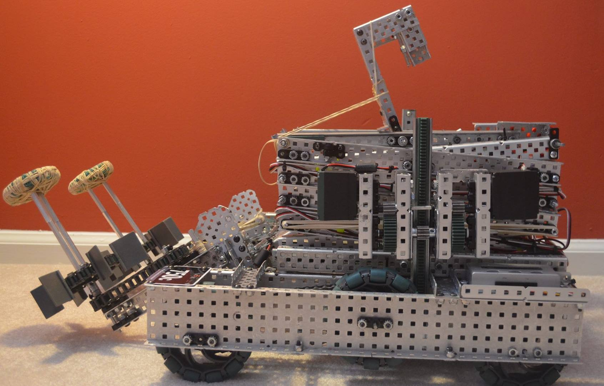
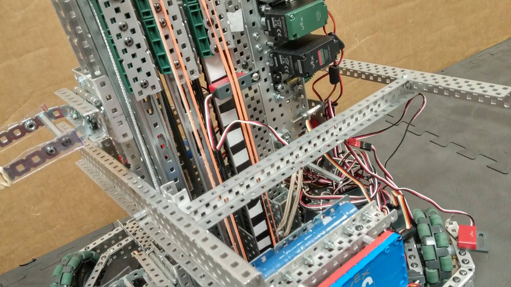

Team 750C

Click here to visit our Facebook page!
Past Awards:
2013 - NJ States
2014 - South Brunswick Regional Competition
2014, Ranney Competition
2015, Rowan University Competition
Haverford Stampede 2013
2014, Bridgewater Regional Qualifier
2015, South Brunswick Regional Qualifier
2015, NJ States
History/Bragging Rights:
We are the first South Brunswick team to make it to the World’s, and still hold a World’s semi-final run in our history. As well as this, we are the oldest remaining team from our school, and 2016 Nothing but Net will be our 4th full year competing at the VEX Robotics competition.
Members:
| Name | Position | Bio |
| Atul Srivastava | Captain / Coach | Rising Senior, Member of the team for 4 years. Likes to watch Netflix in free time and watching the NY Giants. Aspiring ECE major. |
| Varun Radhakrishnan | Co-Captain | Rising Senior, Member of the team for 4 years. Enjoys playing CodeWars in free time. Big Nets and Giants fan. Aspiring computer scientist. |
| Kapil Kanwar | Operations Officer/Driver | Rising Junior, Member of the team for 3 years. Not a big sports fan, but plays LittleWarGame and watches StarCraft 2 religiously. Aspiring computer scientist. |
| Siddharth Kurella | Prime Programmer | Rising Senior, Member of team for 3 years. Enjoys coding in free time, and currently researches at Monmouth University. PC Gamer. Aspiring computer scientist. |
| Varun Pilly (Pillster) | Prime Builder | Rising Junior, Member of the team for 2 years. Heavy hardcore gamer. League of Legends. Aspiring Mechanical engineer. |
| Anshul Doshi | Recognition Officer | Rising Senior. Runs Track and Field and Cross Country. Wants to major in some field of engineering. |
| Suhaas Yerapathi | Secondary Driver | Rising Senior. Enjoys random programming in free time. Runs track and field and likes to exercise and play sports. Future computer scientist. |
| Arka Roy | Logistics Officer | Rising Senior. Netflix Binge watcher. Future computer scientist. |
| Srivats Narasimhan | Mechanical Engineer | Third-year member. I really like robotics, and I hope to go into Engineering for my career. My interests include programming, watching/playing sports, finance, and biking! I'm currently a Junior. |
| Aditya Abhyankar | Prospect | I really like being creative, and innovative, and I'm a big fan of the idea of taking moonshots and thinking big. I absolutely love technology and I like using my computer for just about every homework assignment and school project. |
| Aasahy Amin | Prospect | Missingno |
| Daniel Kenny | Prospect | Missingno |
| Pranav Olety | Prospect | Missingno |
| Shikhar Rastogi | Prospect | Missingno |

